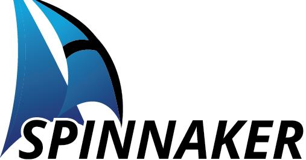

<header>
  <div>
    <h1>Monthly Output Dashboard</h1>
    <div class="sub" id="headerSub">Program volume, SLA, call disposition, and abandonment overview</div>
  </div>
  <div class="nav-tabs">
    <button class="tab-btn active" onclick="switchTab('callcenter')">Call Center</button>
    <button class="tab-btn" onclick="switchTab('email')">Email Support</button>
    <button class="tab-btn" onclick="switchTab('mail')">Mail</button>
  </div>
  <div class="controls">
    <select id="monthFilter"></select>
    <select id="programFilter"><option value="All">All Programs</option></select>
    <button class="secondary" onclick="resetFilters()">Reset</button>
    <!-- TOP RIGHT LOGO WATERMARK -->
    
  </div>
</header>